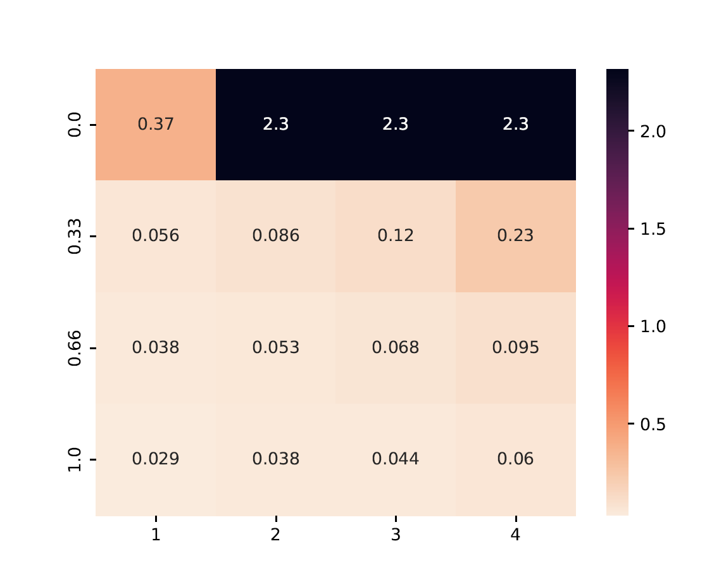
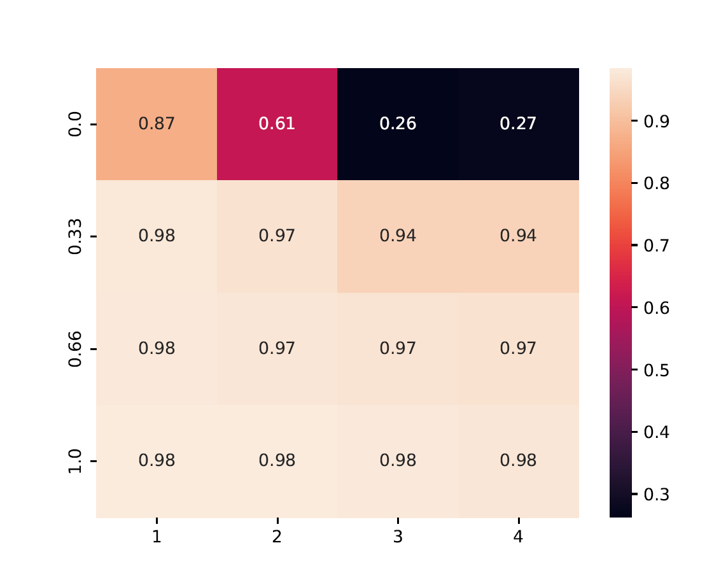

FL Benchmark#
The FL Benchmark in ByzFL is a comprehensive testing framework for evaluating federated learning algorithms under adversarial conditions. It automates large-scale experiments, allowing users to test various aggregators, attacks, and data heterogeneity levels through a single configurable JSON file.
This benchmark extends the Federated Learning Framework by enabling systematic evaluation rather than manual experiment setup.
Key Features#
Fully Configurable via JSON
Define federated learning scenarios (e.g., aggregators, attacks, data heterogeneity) though a single configuration file (
config.json), without modifying code.Scalable Benchmarking
Run exhaustive simulations with multiple configurations in parallel, automatically storing and analyzing results.
Robust Evaluation
Automatically identify the best hyperparameter settings by testing aggregators against the worst-case Byzantine attack.
Prebuilt Visualizations
Easily generate plots (test accuracy curves, heatmaps) to quickly assess performance and compare methods across different configurations.
Pipeline#
- Run All Configurations and Store Results
Executes federated learning simulations using predefined configurations.
Supports parallel execution across multiple settings.
- Evaluate the Results
Assesses robustness against various attacks.
Identifies optimal learning hyperparameters for each aggregator.
- Generate Plots
Produces accuracy curves, heatmaps, and aggregated performance summaries.
Facilitates easy comparison of robust aggregators across different federated settings.
Why This FL Benchmark?#
The FL Benchmark automates large-scale federated learning evaluations, unlike the FL Simulation, which focuses on single-instance experiments.
- It enables exhaustive testing across multiple configurations, including:
✔ Varying numbers of honest vs. Byzantine clients ✔ Different levels of data heterogeneity (IID vs. non-IID distributions) ✔ Multiple aggregation and pre-aggregation strategies ✔ Multiple Byzantine attack strategies
By modifying only the config.json file, users can can fully customize the environment and launch extensive experiments without writing additional code.
Setting Up Your Experiments#
All experiments are set up using a single JSON configuration file (config.json), placed in the working directory.
Below is a sample of a config.json file, testing the strength of state-of-the-art robust aggregators in an adversarial distributed setup.
Click to expand JSON configuration
{
"benchmark_config": {
"device": "cuda",
"training_seed": 0,
"nb_training_seeds": 3,
"nb_honest_clients": 10,
"f": [1, 2, 3, 4],
"data_distribution_seed": 0,
"nb_data_distribution_seeds": 1,
"data_distribution": [
{
"name": "gamma_similarity_niid",
"distribution_parameter": [1.0, 0.66, 0.33, 0.0]
}
]
},
"model": {
"name": "cnn_mnist",
"dataset_name": "mnist",
"nb_labels": 10,
"loss": "NLLLoss"
},
"aggregator": [
{
"name": "GeometricMedian",
"parameters": {
"nu": 0.1,
"T": 3
}
},
{
"name": "TrMean",
"parameters": {}
}
],
"pre_aggregators": [
{
"name": "Clipping",
"parameters": {}
},
{
"name": "NNM",
"parameters": {}
}
],
"server": {
"learning_rate": 0.1,
"nb_steps": 800,
"batch_size_evaluation": 100,
"learning_rate_decay": 1.0,
"milestones": []
},
"honest_nodes": {
"momentum": 0.9,
"weight_decay": 0.0001,
"batch_size": 25
},
"attack": [
{
"name": "SignFlipping",
"parameters": {}
},
{
"name": "Optimal_InnerProductManipulation",
"parameters": {}
},
{
"name": "Optimal_ALittleIsEnough",
"parameters": {}
}
],
"evaluation_and_results": {
"evaluation_delta": 50,
"store_training_accuracy": true,
"store_training_loss": true,
"store_models": false,
"results_directory": "./results"
}
}
- This setup:
Runs experiments on MNIST with 10 honest clients and 1 to 4 Byzantine clients.
Evaluates non-IID data distributions.
Executes the Trimmed Mean & Geometric Median aggregators, pre-composed with Static Clipping and Nearest Neighbor Mixing (NNM).
Executes the Sign Flipping, Optimal A Little Is Enough (Opt-ALIE), and Optimal Inner Product Manipulation (Opt-IPM) attacks.
The FL Benchmark allows users to configure a wide range of parameters, enabling flexible experimentation with different federated learning scenarios.
Dataset: Choose the dataset for training (e.g., MNIST, CIFAR-10).
Model: Select the neural network architecture for federated learning.
Number of Honest Clients: Specify the number of honest clients in the system.
Number of Byzantine Clients: Specify the number of adversarial clients in the system.
Data Distribution: Configure the data heterogeneity across clients (IID, non-IID distributions).
Aggregators: Test different aggregation methods (e.g., Trimmed Mean, Geometric Median). (Hyperparameters must be specified separately.)
Pre-aggregators: Select pre-processing techniques applied before aggregation (e.g., Clipping, Nearest Neighbor Mixing). (Hyperparameters must be specified separately.)
Attacks: Simulate different Byzantine attack strategies (e.g., Sign Flipping, ALIE, Inner Product Manipulation). (Hyperparameters must be specified separately.)
Learning Rate: Define the learning rate for model training.
Client Momentum: Adjust the momentum value for client-side optimization.
Weight Decay: Set the weight decay factor to control regularization.
Note
You can specify a list of values for any supported parameter in
config.json. Each entry in the list is treated as a separate simulation.Not all variables support lists. Using a list for an unsupported parameter may overwrite previous results.
The f parameter must not be explicitly provided to (pre-)aggregators or attacks that require it in their parameters, as it is already determined based on the values of the main f parameter in
config.json.
Launching the Benchmark#
To execute the benchmark, simply run:
from byzfl.benchmark import run_benchmark
if __name__ == "__main__": # Required for multiprocessing
n = 1 # Number of trainings to run in parallel
run_benchmark(n)
The benchmark automatically reads
config.jsonand executes all specified experiments.Results are stored in the
results_directory(default:./results).If no
config.jsonfile exists in your current directory, a default template is generated for customization. You can modify this file before re-running the benchmark.
run_benchmark() provides a built-in evaluation function that automatically selects the best hyperparameters by assessing worst-case attack scenarios.
Specifically, it evaluates various provided hyperparameters, such as learning rates, client momentum, and weight decay, and determines the configuration that achieves the highest worst-case accuracy on a validation set against the strongest Byzantine attack (i.e., the attack that minimizes the best achievable accuracy).
This approach ensures that the selected hyperparameters maximize robustness while preventing overfitting to the test set.
Viewing Results#
ByzFL provides built-in visualization tools to analyze results.
Test Accuracy Curves#
Displays test accuracy trends over time for each aggregator across different attack strategies. Each aggregator is represented by a plot containing accuracy curves for all considered attacks.
from byzfl.benchmark.evaluate_results import plot_accuracy_fix_agg_best_setting
path_training_results = "./results"
path_to_plot = "./plot"
plot_accuracy_fix_agg_best_setting(
path_training_results,
path_to_plot
)
Example Plot#
For nb_honest_clients=10, f=2, distribution parameter = 0.0, aggregator = Trimmed Mean:
{kind=link}
Heatmaps#
Heatmaps summarize performance across multiple configurations.
X-axis: Number of Byzantine clients
Y-axis: Data heterogeneity (distribution parameter)
Cell Value: Worst-case test accuracy or training loss under the strongest attack
Heatmap of training losses#
from byzfl.benchmark.evaluate_results import heat_map_loss
path_training_results = "./results"
path_to_plot = "./plot"
heat_map_loss(path_training_results, path_to_plot)
Geometric Median (Loss)

Trimmed Mean (Loss)
{kind=link}
Heatmap of test accuracies#
from byzfl.benchmark.evaluate_results import heat_map_test_accuracy
path_training_results = "./results"
path_to_plot = "./plot"
heat_map_test_accuracy(path_training_results, path_to_plot)
Geometric Median (Test Accuracy)

Trimmed Mean (Test Accuracy)

Aggregated heatmap of test accuracies#
This plot consolidates all (pre-)aggregators, showing the best-performing method per scenario (cell).
from byzfl.benchmark.evaluate_results import aggregated_heat_map_test_accuracy
path_training_results = "./results"
path_to_plot = "./plot"
aggregated_heat_map_test_accuracy(
path_training_results,
path_to_plot
)
The aggregated view of Geometric Median and Trimmed Mean shows the accuracy achieved by the best method in each configuration:
{kind=link}
Extending the Benchmark#
ByzFL is fully extendable, allowing users to integrate custom (pre-)aggregators, attacks, and models. There are two options:
Modify the code within the installed library.
Clone the ByzFL repository, make changes, and then run it:
git clone https://github.com/LPD-EPFL/byzfl.git
Example: Adding a Custom Aggregator#
To add a new aggregation method:
Navigate to
byzfl/aggregators/aggregators.py.Implement a class with a constructor (__init__) and an aggregation method (__call__).
Register the new aggregation in the config.json file.
Example:
class CustomAggregator:
def __init__(self, param1, param2):
self.param1 = param1
self.param2 = param2
def __call__(self, vectors):
return some_aggregation_function(vectors)
Once implemented, update config.json:
"aggregator": {
"name": "CustomAggregator",
"parameters": {
"param1": 0.5,
"param2": 2
}
}